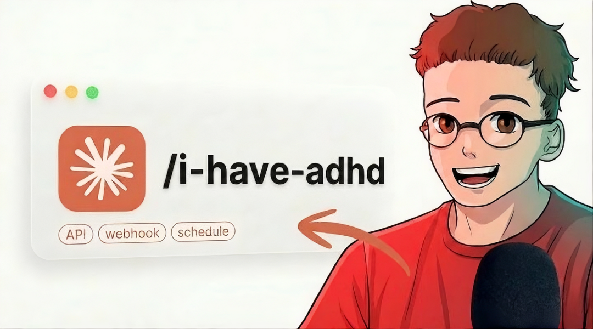
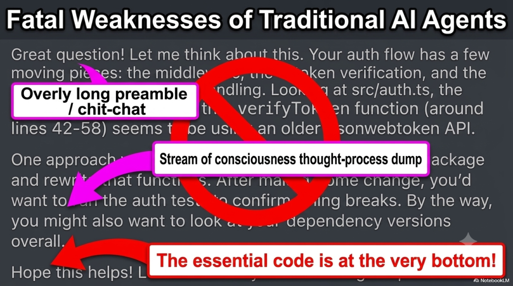
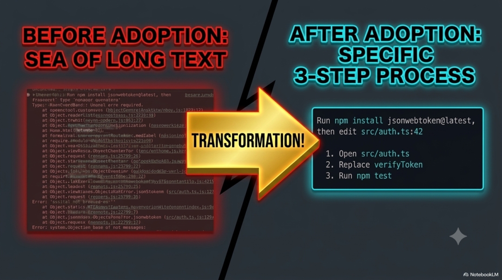

大模型最大的问题不是幻觉，而是答案太'正确'了。ADHD技能通过五个独立智能体、认知框架驱动角色、以及分离生成与批判阶段来解决这个问题。
如何用Claude的ADHD技能超越99%的人
大模型最大的问题不是幻觉，而是答案太"正确"了。ADHD技能通过五个独立智能体、认知框架驱动角色、以及分离生成与批判阶段来解决这个问题。

几天前，我在做一个产品定价方案，让Claude Code给我出主意。它给了我四个方向，看完之后我发现，这些答案Google一下就能得到：基于用量的分级定价（免费版、Pro版）、按量付费、Token套餐、免费广告模式。教科书级别的正确，但不是那种让人眼前一亮的洞见。
有没有办法让Claude Code的输出不那么无聊？
我试了好几种方法，比如修改AGENTS.md文件，但效果平平。直到前几天，我在Reddit上看到一篇帖子："我给Claude Code加了ADHD……现在它的思考能力提升了2倍。"
作者主要做医疗AI安全研究。他用Skill的方法把ADHD思维融入了Claude Code，还写了一篇论文。
Attention Deficit Hyperactivity Disorder(ADHD)，中文译为：注意缺陷多动障碍（也常称为注意力缺陷多动症）。
1. 超级专注（Hyperfocus / 过度专注）
表现： 当面对自己极度感兴趣的事情（如写代码、画画、研究某个冷门领域）时，ADHD患者能展现出超越常人的专注度，甚至屏蔽外界干扰，连续工作数小时不觉得累。
原理： ADHD大脑的多巴胺水平较低，但当遇到高刺激、高兴趣的事情时，多巴胺会瞬间大量分泌，使大脑进入一种极度兴奋和专注的状态。
2. 发散性思维与创造力（Divergent Thinking）
表现： 脑洞大，想法天马行空，擅长“打破常规思考”（Thinking out of the box）。他们能把看似毫不相关的事物联系在一起，产生独特的创意。
原理： ADHD大脑的“默认模式网络”（DMN）异常活跃，且大脑过滤无关信息的能力较弱。这虽然导致他们容易分心，但也让更多的无意识信息涌入脑海，碰撞出创意的火花。
3. 危机中的冷静与高效（Crisis Management）
表现： 在混乱、紧急、高压的环境下（如急诊室、消防、创业初期、突发危机），常人可能会惊慌失措，而ADHD患者往往能保持异常的冷静、清醒，并快速做出决策。
原理： 高压环境会刺激肾上腺素和多巴胺的分泌，这恰好把ADHD大脑的唤醒水平调节到了“刚刚好”的黄金状态，使其运转速度变快。
4. 强大的直觉与模式识别（Intuition & Pattern Recognition）
表现： 能够敏锐地察觉到环境中的微小变化，或者在大量杂乱的信息中快速找出规律（Pattern）。
原理： 因为大脑不擅长过滤背景声音和视觉信号（即“感官超载”的另一面），他们实际上接收了比一般人更多的环境线索，从而能做出直觉式的判断。
5. 高能量、热情与幽默感（High Energy & Resilience）
表现： 精力充沛，富有好奇心，对热爱的事物极具感染力。由于从小经历挫折较多，许多ADHD患者也发展出了极强的韧性和自嘲般的幽默感。
核心问题：大模型太"正确"了
原因在于LLM的自回归生成机制：每个token都基于前面所有内容锚定的条件概率分布来采样。当模型写到第三句话时，前两句已经约束了后续方向。
这意味着大模型的最终输出永远是符合训练分布的"常规思维"，而不是真正有价值的"独特想法"。
对于有标准答案的问题（帮我写快速排序）这完全没问题。但大多数问题是开放性的，大模型在这类问题上很容易变成"平庸机器"。
真正有价值的解决方案往往是"少数人手中的非常规思维"。而这恰好是ADHD思维的舒适区：跳过最显眼的三个答案，在别人停下的地方继续绕弯。

ADHD技能的三个核心设计
一、五个完全独立的智能体
不是让一个AI思考五次，而是发起五个完全独立的LLM调用，调用之间没有任何共享上下文。Agent A的想法对Agent B完全不可见——上下文在物理层面隔离。
这和Anthropic在Harness项目中推荐的方法类似：长任务应该直接重置上下文，避免上下文压缩影响任务表现。
二、认知框架驱动角色
每个智能体被分配一个完全不同的"思维角色"：
"你是一名监管者，审计系统的合规性和失效模式" "你是一个从未见过软件的十岁孩子，用最朴素的方式重新思考这个问题"
论文中包含15种这样的框架，ADHD每次运行随机选取五种。目标不是让每个智能体都"正确"，而是让它们各不相同。
三、生成阶段与批判阶段分离
这是我认为最精妙的设计：
发散阶段："你是一名生成者，不是批评者。禁止评估、排序和对冲。" 收敛阶段：切换到完全不同的LLM调用，提示词变为"你现在是批评者，进行对抗性阅读、打分、找陷阱。"
这两种角色使用不同的调用、不同的系统提示、不同的输出格式。

为什么重要？因为当创造力和判断力同时运作时，创造力无法充分发挥——就像一边写初稿一边修改，结果什么都写不出来。
论文结果
作者进行了系统性验证：六道开放性工程题。ADHD对比同一模型的单次回答——五胜一负。ADHD将解决方案的新颖性提升了 5.17，广度提升了 4.17。
与CoT和ToT对比：
CoT让大脑沿单一路径思考得更慢更仔细——仍然是线性的 ToT让大脑在分叉点尝试不同的下一步，但分支共享上下文 两者都无法解决"角度本身没有改变"的问题
ADHD通过推理时的调用编排解决了这个问题——不改变模型权重，不做微调。
安装方法
Claude Code：
claude plugin marketplace add ayghri/i-have-adhd
claude plugin install i-have-adhd@i-have-adhd
查看安装结果：
claude plugin list
需要更新时：
claude plugin marketplace update i-have-adhd
暂时禁用：
claude plugin disable i-have-adhd
完全卸载：
claude plugin uninstall i-have-adhd
claude plugin marketplace remove i-have-adhd
在会话中输入 /i-have-adhd 激活。如果自动补全里没有出现，先重启Claude Code——插件索引通常在启动时读取。
Codex：
codex plugin marketplace add ayghri/i-have-adhd --ref main
codex plugin add i-have-adhd@i-have-adhd
在会话中输入 $i-have-adhd 激活。要恢复正常输出，直接告诉智能体 stop adhd mode 或 normal mode。
设置默认输出风格
如果每次会话都要手动启用太麻烦，可以把持久化规则写入全局指令文件：
Claude Code： ~/.claude/CLAUDE.mdCodex： ~/.codex/AGENTS.md
添加以下内容：
## 输出风格
始终遵循 `i-have-adhd` 技能的规则：行动优先，编号步骤，无前言，无结束语，每轮重申状态。
全局激活会影响所有项目。更稳妥的做法是先在几个会话中手动调用，感受这种节奏是否适合自己的工作方式，再决定是否写入全局配置。
如何开始（分阶段上手）
第一天： 把"你现在最头疼的事"告诉Claude。就这一件事。
"早上没法开始工作""Notion里写的任务从来不复盘""写会议纪要很痛苦"。什么都行。重要的不是Claude的回答有多好用，而是"把问题说出来、收到某种回应"这个体验本身。
一周后： 建一个叫 MEMORY.md 的文件。
把Claude认为值得记录的内容，一行一行写进去：
自己的决策标准和工作规则 过去的失败（不想重蹈的覆辙） 常用的短语和指令 特定项目的前置条件
不要写：账号密码、认证信息、健康信息等敏感内容——这些不要存入AI可读的持久化记忆。
用顺手之后： 把重复性任务变成一个技能。选一件每周都做的事——整理会议纪要、整理任务、写周报都行。创建一个技能，说一句话就能触发。做完一个，就懂得怎么做其他的了。
再进一步： 让Claude以外的AI来审阅你的输出（Codex、ChatGPT、Gemini）。Claude有很强的从众偏见，倾向于说"这很好"。用另一个模型来打破专注时产生的认知隧道效应。
养成习惯前： 每周留半天"Claude禁用日"——只用手写笔记或纸质本。如果发现自己什么都做不了，说明你已经依赖了。越早意识到越好。
依赖本身不是坏事。没有量化的依赖才危险。
作者：codexlz | 阅读时间：10分钟 | 发布日期：2026年7月24日
链接：原文链接[1]
参考资料：GitHub[2] · 论文[3]
引用链接
[1]原文链接: https://medium.com/data-science-collective/how-to-use-claude-adhd-skill-better-than-99-of-people-9876934d8548
[2]GitHub: https://github.com/uditakhourii/adhd
[3]论文: https://divergent.sh/